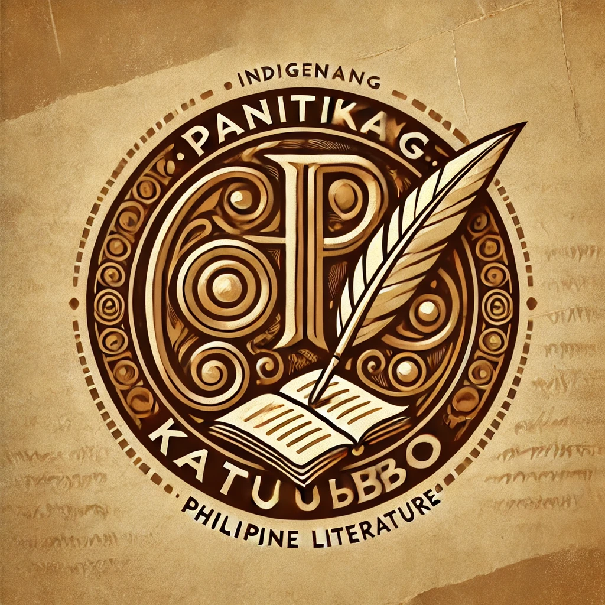

Ang "Panitikang Katutubo" ay isang paglalakbay sa mayamang kasaysayan ng ating panitikan bago pa man dumating ang mga dayuhang mananakop. Sa pamamagitan ng mga epiko, alamat, awit, at talinghaga, naipapasa mula sa salinlahi ang yaman ng ating
kultura, pananampalataya, at pamumuhay.
Sa pamamagitan ng website na ito, layunin naming ipakita ang ganda at kabuluhan ng ating katutubong panitikan. Mula sa awit at alamat hanggang sa mga salawikain at kasabihan, nais naming bigyang halaga ang malalim na kahulugan ng panitikang
Pilipino sa ating pagkakakilanlan bilang isang bansa.